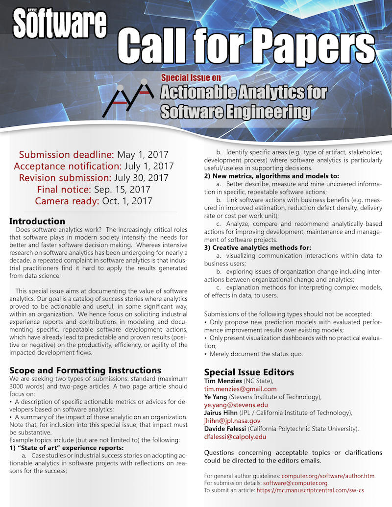

Call for Papers

IEEE Software Special Issue on Actionable Analytics for Software Engineering
{kind=link}
IEEE Software Special Issue on Actionable Analytics for Software Engineering
Submission deadline: May 1, 2017
Acceptance notification: July 1, 2017
Revision submission: July 30, 2017
Final notice: Sep. 15, 2017
Camera ready: Oct. 1, 2017
Special Issue Editors:
- Tim Menzies (NC State),
tim.menzies@gmail.com - Ye Yang (Stevens Institute of Technology),
ye.yang@stevens.edu - Jairus Hihn (JPL / California Institute of Technology),
jhihn@jpl.nasa.gov - Davide Falessi (California Polytechnic State University),
dfalessi@calpoly.edu
About this Issue
Does software analytics work? The increasingly critical roles that software plays in modern society intensify the needs for better and faster software decision making. Whereas intensive research on software analytics has been undergoing for nearly a decade, a repeated complaint in software analytics is that industrial practitioners find it hard to apply the results generated from data science.
This special issue aims at documenting the value of software analytics. Our goal is a catalog of success stories where analytics proved to be actionable and useful, in some significant way, within an organization. We hence focus on soliciting industrial experience reports and contributions in modeling and documenting specific, repeatable software development actions, which have already lead to predictable and proven results (positive or negative) on the productivity, efficiency, or agility of the impacted development flows.
Scope and Formatting Instructions
We are seeking two types of submissions: standard (maximum 3000 words) and two-page articles. These two page article should focus on:
- A description of specific actionable metrics or advices for developers based on software analytics;
- A summary of the impact of those analytic on an organization. Note that, for inclusion into this special issue, that impact must be substantive.
Example topics include (but are not limited to) the following:
1. "State of art" experience reports
- Case studies or industrial success stories on adopting actionable analytics in software projects with reflections on reasons for the success;
- Identify specific areas (e.g., type of artifact, stakeholder, development process) where software analytics is particularly useful/useless in supporting decisions.
2. New metrics, algorithms and models to...
- Better describe, measure and mine uncovered information in specific, repeatable software actions;
- Link software actions with business benefits (e.g. measured in improved estimation, reduction defect density, delivery rate or cost per work unit);
- Analyze, compare and recommend analytically-based actions for improving development, maintenance and management of software projects.
3. Creative analytics methods for...
- Visualizing communication interactions within data to business users;
- Exploring issues of organization change including interactions between organizational change and analytics;
- Explanation methods for interpreting complex models, of effects in data, to users.
Papers that will NOT be Accepted

Submissions of the following types should not be accepted:
- Only propose new prediction models with evaluated performance improvement results over existing models;
- Only present visualization dashboards with no practical evaluation;
- Merely document the status quo.
For more Information
- Questions concerning acceptable topics or clarifications could be directed to the editors emails.
- For general author guidelines: computer.org/software/author.htm
- For submission details: software@computer.org
- To submit an article: https://mc.manuscriptcentral.com/sw-cs